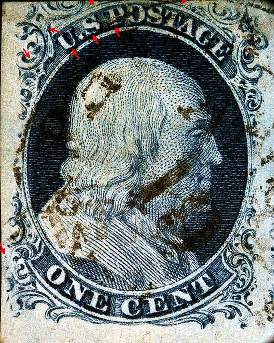
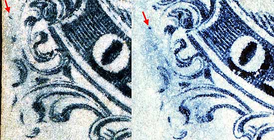

| 1¢ Franklin Issue of 1851-1857, PLATE 1 LATE.
Pos 96R1L, (Scott #9) |
| Scott #9 Blue, Type IV, Relief B Issued both imperforate and perforated. Perforated copys are more scarce. SINGLE RECUT TOP ONLY On Plate 1 in its original state (Plate 1 Early), positions 96 to 100R were entered with the "A" relief transfer roll. When the plate was reconditioned in the spring of 1852, to become what we call Plate 1 late, Positions 96R and 97R were re-entered with the "B" relief roller. Positions 98, 99 and 100 remained "A" reliefs. A plate bruise can be seen in Ornaments "H and K". Underneath most of the "misplaced A reliefs", and particularly visible on Plate 1Early, are the remnants of the top of the "B" relief - which was beneath "A" on the transfer roll. Position 97R shows by far the strongest evidence of this. It is very remarkable on the early state, but still quite evident on the Late state. |
|  |
| Figure 1. (Below) Plating marks and bruise per the Ashbrook plating diagrams.
 |
| MY STANDARD DISCLAIMER: Thanks for visiting this site. I hope you learn something new as I am really having fun doing this. You, the visitor, have my permission to link to my pages and to share the link paths with others. I only ask in return that you send me an e-mail if I have made a mistake, or have done some other technical blunder that in my rush to put these pages up would cause the visitor confusion. Please also visit my other website at www.slingshotvenus.com. and support the live music arts. While your there, be sure to purchase our music. There are not many philatelic rock stars around and we need all the help we can get. :-) I can be reached at: nerdman@ix.netcom.com |